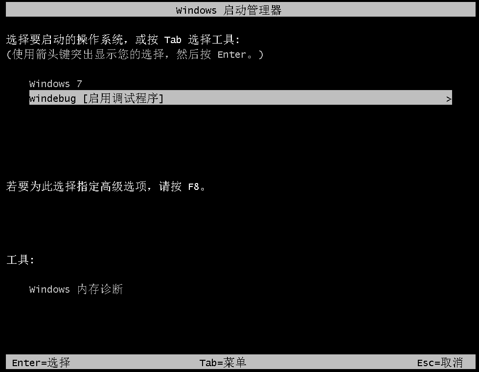

使用vmware和windbg调试Windows7
文章目录
因为工作的需要，需要对Windows下的设备驱动进行一些调试，所以查了一下如何在Windows开机时进行内核调试。在本机中不能直接进行内核调试，所以通过把 Windows跑在 vmware 中，使用串口的方式，配合windbg来进行调试。下面是配置的步骤。
在Windows中添加启动调试的菜单
为了开机调试，需要打开winload的调试模式，进入系统后，使用管理员模式打开 cmd。使用如下命令创建一个使用串口调试的开机选项
|
|
以上的操作就在启动菜单创建了新的一项，启动了 debug 模式，同时使用串口，频率为115200。配置完可以通过打开 msconfig 工具，选择 “引导” 菜单查看刚才的配置
在vmware添加串口
在虚拟机设置中添加串口端口设备，如下图进行配置
配置windbg
打开 windbg，需要打开对应位数的程序，我调试的是64位系统，就要打开64位的windbug。然后依次选择 File -> Kernel Debug 然后如下图配置，Pipe 一定要勾上否则会报错
启动调试
运行虚机，选择启动调试的菜单项，下图菜单叫 windebug。然后等待 windbg 那边有反应已经连接上系统，就可以开始调试 
文章作者 hao
上次更新 2022-12-31